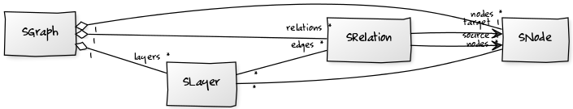

Linguistic corpora show a nearly unlimited set of different kinds of annotations to
describe linguistic phenomena. That means, not only is the number of tagsets
unbound, there is also a huge set of different structures to describe these
phenomena. For instance part-of-speech or lemmatizations can be added to a token,
tokens can also be grouped together to annotate them as one entity, such as names in
named entity recognition. Furthermore, the annotation of constituents or the
rhetorical structure theory build an entire tree-like structure above the tokens. In
dialogue data we need to model multiple texts belonging to different speakers, as well as a
link to an audio stream. Coreferences or anaphoric chains need to interlink
tokens, which may be spread across the entire text. Many tools and models (e.g., formats)
address these annotations one by one: There are formats to address syntactical
data (like {{site.link_tigerxml}} or the {{site.link_ptb}} format), or coreferences (like the {{site.link_mmax2}}
format), or dialogue data (like the {{site.link_exmaralda}} basic transcription, the {{site.link_elan}} format),
and many many more. But developements in the last years have shown that a lot of
linguistic phenomena are spread over different kinds of annotations. So more and
more corpora have been created which are annotated on multiple annotation layers
like the {{site.link_pcc}} or the {{site.link_tuebadz}}. The aim of Salt is to consolidate all kinds of
annotations within a single model. For doing so we need a powerful base structure, which
can cover all the different necessities at once. A very well-known and powerful
structure in mathematics and informatics is the common graph, which is widely used
for modeling very different kinds of data. The graph structure has a further benefit in that
it helps to keep the model simple with its small set of different model elements.
Our graph structure is rather simple, it only contains four model elements: node,
relation, label and layer.

Graphs are very flexible and abstract structures, but not very specialized
to a linguistic purpose. So we need to abstract over linguistic data to map them
into such a structure.
To give a simple explanation of what a graph is, let us
forget linguistics for a moment and think about humans and their relationships.
Imagine a set of humans, for instance your family or friends. In a graph, each of
these humans will represent one node. The relationship, for instance between exactly
two humans, then is defined as a relation. In other words, an edge connects two
nodes. Now, the relations between humans can be very different, so for instance the
relation between a couple can be described as a love relation, whereas the relation
between an employee and her/his boss could be described as a work relation. A
relation can also have a direction: Imagine, for instance, that a person and a car are
modeled as nodes, linked by relation with the semantic "drive". This way, a person can drive a
car, but not the other way round. These examples show that edges between nodes can be
very different, similar to human relations. To differentiate between the types of
edges, they can be labeled. The same goes for nodes: they can also labeled,
for instance with the name of the human that node represents.
Re-applied to linguistics, this means that if we can model humans and their
relationships as a graph, we can also model linguistic artifacts as a graph. E.g., we can model texts, tokens etc. as nodes, linguistic categorization as
labels and relations between them as relations.